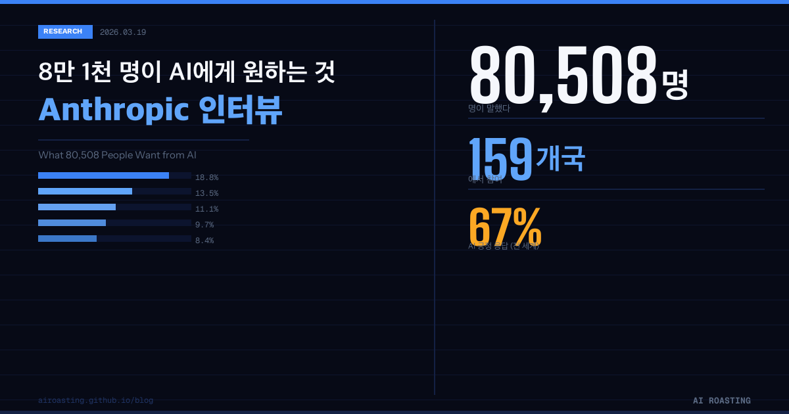

Anthropic은 2025년 12월, 159개국 80,508명을 대상으로 AI 인식 인터뷰를 진행했습니다. 단일 조사로는 역대 가장 큰 규모입니다.
사람들은 AI에게 '업무 자동화'보다 '삶의 질 개선'을 원했습니다. 기대와 불안은 서로 다른 집단을 가르는 선이 아니라, 한 사람 안에 동시에 존재했습니다.
응답자의 67%가 AI를 긍정적으로 평가했지만, 무엇을 기대하고 무엇을 걱정하는지는 지역과 소득 수준에 따라 크게 달랐습니다.
8만 1천명을 조사해보니 사람들이 AI에게 원하는 건 '더 빠른 일'이 아니라 '더 나은 삶'이었습니다.
당신의 AI 도입 목표는 아직 KPI 달성에 묶여 있습니까?
Anthropic은 2025년 12월, 159개국 70개 언어로 80,508명과 대화 인터뷰를 진행했습니다. 하나의 AI 인식 조사로는 역대 가장 큰 규모이고, 가장 많은 언어를 포괄한 연구입니다.
경영자, 팀장, 창업자라면 이 데이터에서 두 가지를 확인할 수 있습니다. 첫째, 고객과 직원이 AI를 실제로 어떻게 생각하는지입니다. 둘째, 자신의 AI 전략에서 놓치고 있는 부분이 무엇인지입니다.
| 항목 | 수치 |
|---|---|
| 총 인터뷰 참여자 | 80,508명 |
| 참여 국가 | 159개국 |
| 사용 언어 | 70개 |
| 조사 시기 | 2025년 12월 |
| AI 긍정 응답 비율 | 67% |
| 최저 국가 긍정 비율 | 60% 이상 (모든 국가) |
사람들은 AI를 단순히 일을 빠르게 처리하는 도구로 원하지 않습니다. 삶 전반이 바뀌길 원합니다.
1위는 직업적 탁월함(18.8%)입니다. 멕시코의 한 소프트웨어 엔지니어는 이렇게 말했습니다. "AI 덕분에 칼퇴근이 가능해졌습니다. 아이들을 학교에서 데려와 밥을 먹이고 함께 놀 수 있게 됐습니다."
AI가 실제로 가장 많이 가져다준 성과는 생산성(32%)입니다. 그런데 사람들이 가장 원한 것은 생산성이 아니었습니다. 이 간극이 핵심입니다.
생산성 향상(32%)이 압도적 1위입니다. 그런데 두 번째로 많은 18.9%는 "AI가 기대에 미치지 못했다"고 답했습니다. AI가 실질적인 도움이 된다는 것도, 아직 충분하지 않다는 것도 동시에 사실입니다.
1위 우려는 일자리 위협이 아닙니다. AI의 부정확성(26.7%)이 일자리 위협(22.3%)보다 4.4%포인트 높습니다. 조직 내 AI 채택이 기대만큼 빠르지 않다면, 기술 역량보다 신뢰 구축을 먼저 점검해야 합니다.
연구팀은 이를 '빛과 그림자(Light and Shade)'라고 불렀습니다. 희망과 불안은 서로 다른 집단을 나누는 선이 아닙니다. 같은 사람 안에 함께 있습니다.
AI로 혜택을 경험한 사람일수록 관련 리스크도 더 크게 인식했습니다. 가장 비판적인 목소리는 AI를 가장 많이 쓰는 사람에게서 나온다는 뜻입니다. 팀에서 AI 문제를 가장 날카롭게 짚는 사람이 오히려 가장 정교한 활용자일 수 있습니다.
| 지역 | AI 긍정도 | 주요 관심사 |
|---|---|---|
| 아프리카·남미·아시아 | 평균 이상 ↑ | 창업, 학습 기회, 경제적 도약 |
| 유럽·북미 | 신중 (중간) | 거버넌스, 규제, 프라이버시 |
| 동아시아 | 중간 (우려 동반) | 인지 능력 저하, 의미 상실 |
| 전체 평균 | 67% | 모든 국가 60% 초과 |
저중소득 국가 응답자는 고소득 국가 대비 약 2배 높은 비율로 "AI에 대한 걱정이 없다"고 답했습니다. 이들에게 AI는 위협이 아니라, 자본 없이도 기회를 만들 수 있는 도구입니다.
| 희망 카테고리 | 글로벌 평균 | 특히 높은 지역 |
|---|---|---|
| 창업·사업 확장 | 8.7% | 아프리카, 남중앙아시아, 중남미 |
| 학습·역량 성장 | 8.4% | 중앙·남아시아 (13~14%) |
| 삶의 관리 | 13.5% | 서유럽·북미 선진국 |
| 개인 성장·재정 독립 | 13.7% / 9.7% | 동아시아 (가족 부양 맥락) |
신뢰 없는 AI 도입은 채택률 저하로 이어집니다. 응답자 26.7%가 AI의 부정확성을 가장 큰 우려로 꼽았습니다. 직원들이 AI 결과물을 매번 다시 확인해야 한다고 느낀다면, 절감한 시간은 검증 비용으로 고스란히 상쇄됩니다. 신뢰성이 낮은 AI 도입에는 숨겨진 비용이 있습니다. 'AI가 만든 오류를 사람이 수정하는 시간'입니다.
가장 많이 쓰는 사람이 가장 날카롭게 우려합니다. AI로 혜택을 경험한 사람일수록 리스크도 더 크게 인식했습니다. 비판적으로 AI를 쓰는 사람이 곧 가장 정교한 활용자라는 뜻입니다. 이들을 저항자로 오해하면, 조직에서 가장 유능한 AI 활용자를 잃게 됩니다.
"AI를 쓸 때 가장 기대하는 것 하나, 가장 걱정되는 것 하나를 말해주세요." 이 연구 데이터와 얼마나 겹치는지 확인합니다. (1:1 대화 15분 × 5명)
직원들이 AI 결과물을 얼마나 믿는지, 오류 발생 시 어디서 확인하는지를 팀 미팅 안건에 추가합니다. (30분)
유럽 팀에는 거버넌스와 안전, 동남아 팀에는 역량 개발과 기회라는 다른 언어로 AI를 소개합니다. (HR·커뮤니케이션 팀과 협업, 1주)
인터뷰어도, 분석자도 Claude입니다. 사람 연구자가 진행한 연구가 아닙니다. Claude 기반 "Anthropic Interviewer"가 질문하고, Claude 기반 분류기가 답변을 카테고리화했습니다. 질문한 도구와 분석한 도구가 같은 회사의 제품입니다. 결과를 해석할 때 이 구조적 한계를 반드시 고려해야 합니다.
샘플이 Claude 사용자로 한정됩니다. 80,508명은 이미 Anthropic 제품을 쓰고 있는 사람들입니다. AI에 비교적 친숙한 집단이기 때문에, 전 세계 일반 인구를 대표하는 표본으로 보기 어렵습니다.
카테고리 분류는 연구팀의 해석입니다. 응답자의 발언을 9개 희망·13개 우려 카테고리로 나눈 것은 Claude 분류기가 처리한 결과입니다. 같은 발언도 다른 분류 체계에서는 다른 수치로 나올 수 있습니다.
긍정 편향 가능성이 있습니다. Anthropic이 자사 제품 사용자를 자사 AI로 분석한 연구입니다. 67%라는 긍정 비율에는 샘플 편향과 방법론 편향이 동시에 작용했을 수 있습니다.
사람들은 AI에게 '더 빠른 일'이 아닌 '더 나은 삶'을 원합니다. AI 전략의 출발점은 효율 지표가 아니라 사람의 기대와 불안에 대한 이해여야 합니다.
- Anthropic. "What 81,000 People Want from AI." Anthropic Features. 2026년 3월. https://www.anthropic.com/features/81k-interviews